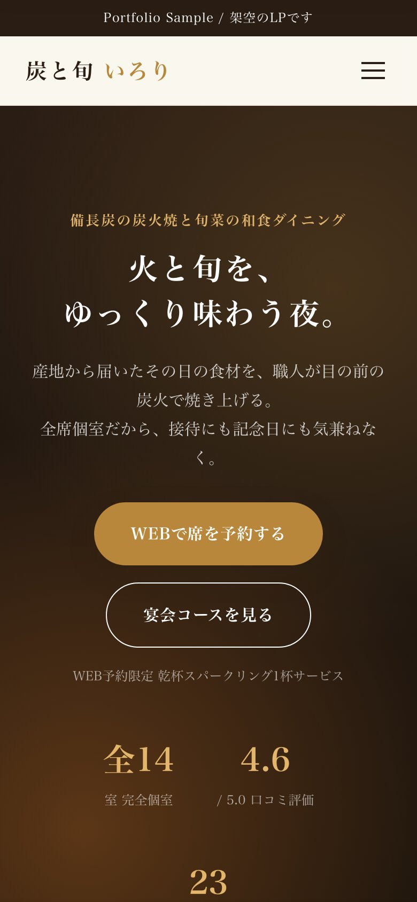
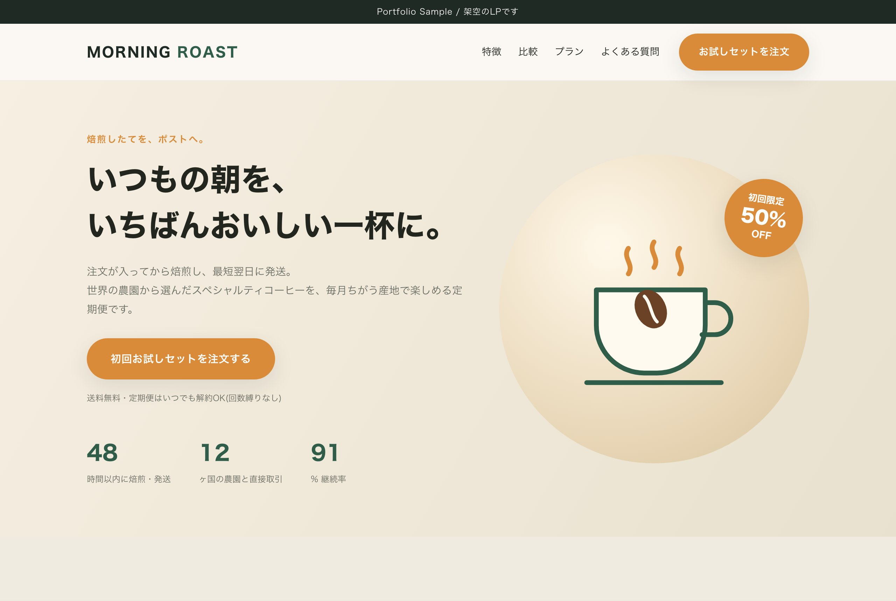
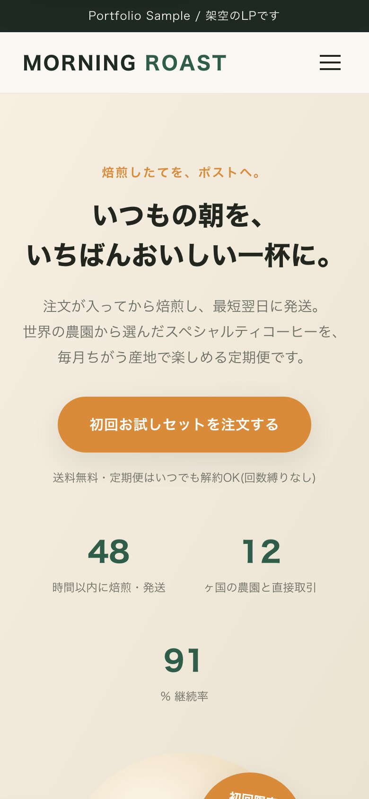
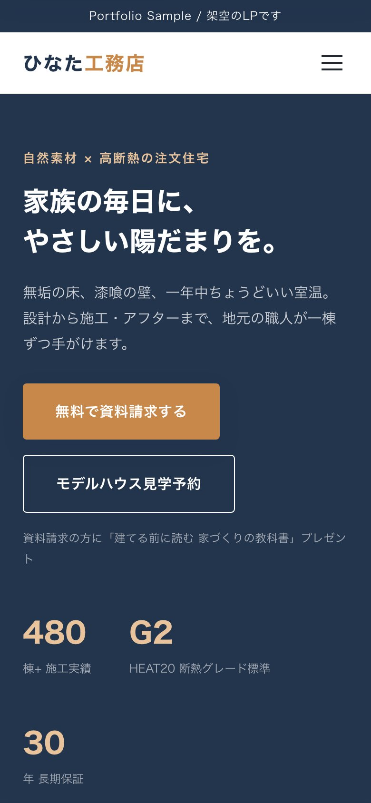
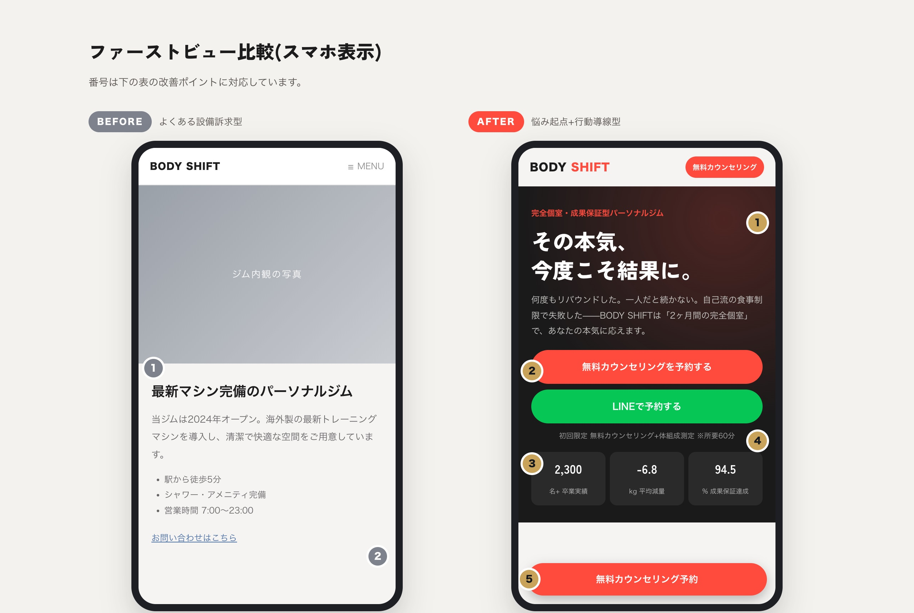
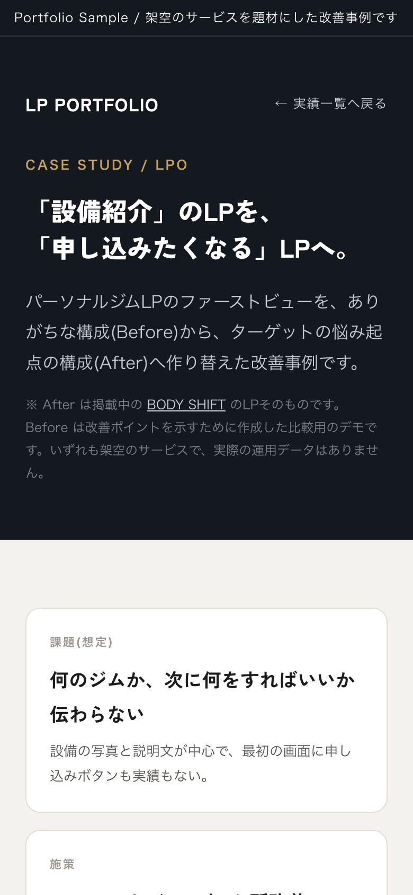

炭火焼と旬菜の和食ダイニングの予約LP。お品書き・宴会コースを見せ、濃い茶×金と明朝体で上質な夜の時間を演出する構成。
このLPを見る →

スペシャルティコーヒー定期便の販売LP。他の買い方との比較表と初回お試しオファーで、定期購入への申し込みにつなげる構成。
このLPを見る →



設備紹介中心のパーソナルジムLPを、悩み起点のキャッチコピーと迷わない予約導線へ作り替えた改善事例。ファーストビューの5つの改善ポイントを比較で解説。
この事例を見る →
